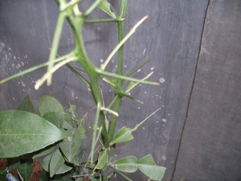
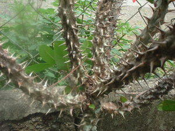

duhi  
/dugi/
n.
“thorn”
n.
thorn
Duhi bes te sapinit ka nakatued te paa ku.
O. Syn. hindang
Eng. thorn; thistle; prickle; spike
Tag. tiník
Ceb. tunok
Ilo.: siít
Tigwanon: dugi
Binukid: dugi
Dibabawon: dugi
Tagbawa: dugi
Cotabato Manobo: dugi
Tasaday: dugi
WBM: duǥi
Ilianen: ruhi
Obo: duhi
Proto: dugi
OCM: Ethnobotany (824)
Online dict status: -
Usage level: M
n.
(duhiyen, -en) thorny ground
Mahirap ne eggilamunan ka kamet ney su duhiyen ka me hilamunen.
Our farm has a lot of thorny grass that's why it's hard to be cleaned.
Eng. thorny ground; thorny
Tag. madáwag
Ceb. tunukon nga dapit
Ilo.: kasíitan
OCM: Tillage (241)
Online dict status: -
Usage level: M
Updated by: RJH,AAA
Last updated: 09/Sep/2009
This page last updated: 19/May/2012
Copyright © 2009-2010, Matigsalug Language Christian Association, Inc